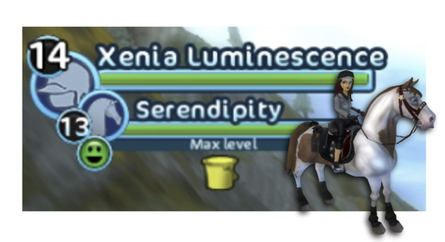
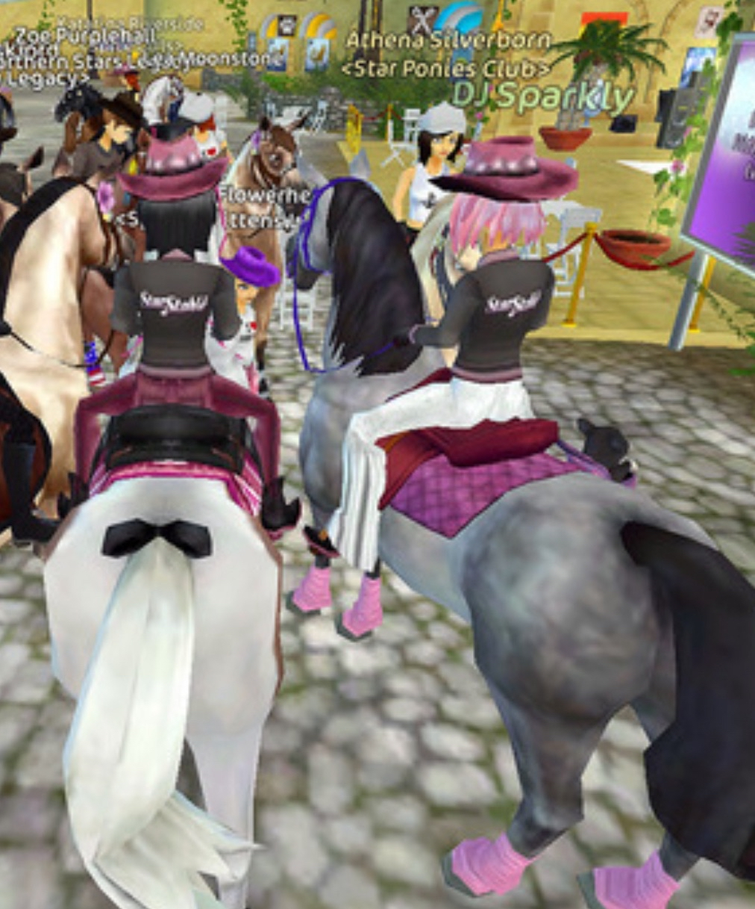
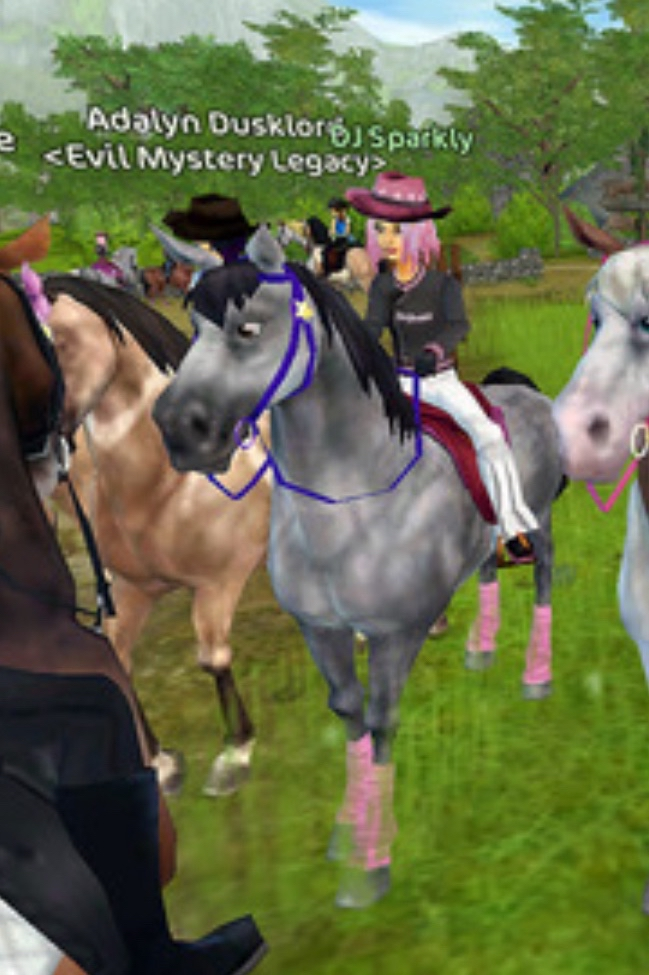

Special
Usernames
Archive of unique usernames
Xenia Luminescence
Only one player got this name. She won it in a competition back in 2012, where one of the prizes was to be able to change your character and horse's names. Her starter horse's name is Serendipity. Her original name was Kelia Moonwater.
We originally found this information on Xenia's YouTube channel and Blogspot, but the pages were deleted in May 2026. An archived version of her blog is still available.

• Justin Moorland
Justin Moorland was an account created in 2015 by the SSO team to promote the game's story. He has been seen on many servers in several countries and always gave the same speech; How great Dark Core is. Some rumors claimed he was a hacker, but this theory was later debunked by the SSO team.
DJ Sparkly
The origin of this username is uncertain. Two theories exist, based on research by Caterina Kittenpaw.
-DJ Sparkly was among one of SSO’s first collaborations ever, DJ Sparkly was a sort of social media DJ for video games. The “DJ” aspect comes from SSO inviting the community to tune into DJ Sparkly’s radio frequency or Pandora channel where DJ Sparkly would play a setlist or even requested songs.
-DJ Sparkly was just a SSO employee who probably wasn’t hired solely to be DJ Sparkly, but just volunteered to take up the persona for the community’s enjoyment.

